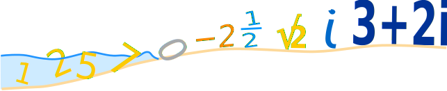
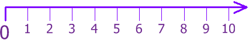
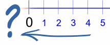
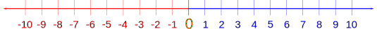
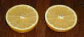
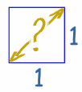

The Evolution of Numbers

I want to take you on an adventure ...
... an adventure through the world of numbers.
Let us start at the beginning:
Q: What is the simplest idea of a number?
A: Something to count with!
The Counting Numbers
We can use numbers to count: 1, 2, 3, 4, etc
Humans have been using numbers to count with for thousands of years. It is a very natural thing to do.
- You can have "3 friends",
- a field can have "6 cows"
- and so on.
So we have:
Counting Numbers: {1, 2, 3, ...}
And the "Counting Numbers" satisfied people for a long time.
Zero
The idea of zero, though natural to us now, was not natural to early humans ... if there is nothing to count, how can we count it?
Example: we can count dogs, but we can't count an empty space:
 |
 |
|
| Two Dogs | Zero Dogs? Zero Cats? |
|---|
An empty patch of grass is just an empty patch of grass!
Placeholder
But about 3,000 years ago people needed to tell the difference between numbers like 4 and 40. Without the zero they look the same!
So they used a "placeholder", a space or special symbol, to show "there are no digits here"
5 2
So "5 2" meant "502" (5 hundreds, nothing for the tens, and 2 units)
Number
The idea of zero had begun, but it wasn't for another thousand years or so that people started thinking of it as an actual number.
But now we can think
"I had 3 oranges, then I ate the 3 oranges, now I have zero oranges...!"
The Whole Numbers
So, let us add zero to the counting numbers to make a new set of numbers.
But we need a new name, and that name is "Whole Numbers":
Whole Numbers: {0, 1, 2, 3, ...}

The Natural Numbers
You may also hear the term "Natural Numbers" ... which can mean:
- the "Counting Numbers": {1, 2, 3, ...}
- or the "Whole Numbers": {0, 1, 2, 3, ...}
depending on the subject. I guess they disagree on whether zero is "natural" or not.
Negative Numbers
But the history of mathematics is all about people asking questions, and seeking the answers!
One of the good questions to ask is
"if we can go one way, can we go the opposite way?"
We can count forwards: 1, 2, 3, 4, ...
|
... but what if we count backwards: 3, 2, 1, 0, ... what happens next? |
 |
The answer is: we get negative numbers:

Now we can go forwards and backwards as far as we want
But how can a number be "negative"?
By simply being less than zero.

|
A simple example is temperature. We define zero degrees Celsius (0° C) to be when water freezes ... but if we get colder we need negative temperatures. So −20° C is 20° below Zero. |
Negative Cows?
And in theory we can have a negative cow!
Think about this ...If you had just sold two bulls, but can only find one to hand over to the new owner... you actually have minus one bull ... you are in debt one bull!
So negative numbers exist, and we're going to need a new set of numbers to include them ...
Integers
If we include the negative numbers with the whole numbers, we have a new set of numbers that are called integers
Integers: {..., −3, −2, −1, 0, 1, 2, 3, ...}
The Integers include zero, the counting numbers, and the negative of the counting numbers, to make a list of numbers that stretch in either direction indefinitely.
Try it yourself (click on the line):
Fractions

If you have one orange and want to share it with someone, you need to cut it in half.
You have just invented a new type of number!
You took a number (1) and divided by another number (2) to come up with half (1/2)
The same thing happens when we have four biscuits (4) and want to share them among three people (3) ... they get (4/3) biscuits each.
A new type of number, and a new name:
Rational Numbers
Any number that can be written as a fraction is called a Rational Number.
So, if "p" and "q" are integers (remember we talked about integers), then p/q is a rational number.
Example: If p is 3 and q is 2, then:
p/q = 3/2 = 1.5 is a rational number
The only time this doesn't work is when q is zero, because dividing by zero is undefined.
Rational Numbers: {p/q : p and q are integers, q is not zero}
So half (½) is a rational number.
And 2 is a rational number also, because we could write it as 2/1
So, Rational Numbers include:
- all the integers
- and all fractions.
And also any number like 13.3168980325 is rational:
13.3168980325 = 133,168,980,32510,000,000,000
That seems to include all possible numbers, right?
But There Is More
People didn't stop asking the questions ...and here is one that caused a lot of fuss during the time of Pythagoras:

When we draw a square (of size "1"), what is the distance across the diagonal?
The answer is the square root of 2, which is 1.4142135623730950...(etc)
But it is not a number like 3, or five-thirds, or anything like that ...
... in fact we cannot answer that question using a ratio of two integers
square root of 2 ≠ p/q
... and so it is not a rational number (read more here)
Wow! There are numbers that are NOT rational numbers! What do we call them?
What is "Not Rational" ...? Irrational !
Irrational Numbers
So, the square root of 2 (√2) is an irrational number. It is called irrational because it is not rational (can't be made using a simple ratio of integers). It isn't crazy or anything, just not rational.
And we know there are many more irrational numbers. Pi (π) is a famous one.
Useful
So irrational numbers are useful. We need them to
- find the diagonal distance across some squares,
- to work out lots of calculations with circles (using π),
- and more,
So we really should include them.
And so, we introduce a new set of numbers ...
Real Numbers
That's right, another name!
Real Numbers include:
- the rational numbers, and
- the irrational numbers
Real Numbers: {x : x is a rational or an irrational number}
In fact a Real Number can be thought of as any point anywhere on the number line:
This only shows a few decimal places (it is just a simple computer)
but Real Numbers can have lots more decimal places!
Any point Anywhere on the number line, that is surely enough numbers!
But there is one more number which has turned out to be very useful. And once again, it came from a question.
Imagine ...
The question is:
"is there a square root of minus one?"
In other words, what can we multiply by itself to get −1?
Think about this: if we multiply any number by itself we can't get a negative result:
- 1×1 = 1,
- and also (−1)×(−1) = 1 (because a negative times a negative gives a positive)
So what number, when multiplied by itself, results in −1?
This is normally not possible, but ...
"if you can imagine it, then you can play with it"
So, ...
Imaginary Numbers
|
... let us just imagine that the square root of minus one exists. We can even give it a special symbol: the letter i |
And we can use it to answer questions:
Example: what is the square root of −9 ?
Answer: √(−9) = √(9 × −1) = √(9) × √(−1) = 3 × √(−1) = 3i
OK, the answer still involves i, but it gives a sensible and consistent answer.
And i has this interesting property that if we square it (i×i) we get −1 which is back to being a Real Number. In fact that is the correct definition:
Imaginary Number: A number whose square is a negative Real Number.
And i (the square root of −1) times any Real Number is an Imaginary Number. So these are all Imaginary Numbers:
- 3i
- −6i
- 0.05i
- πi
There are also many applications for Imaginary Numbers, for example in the fields of electricity and electronics.
Real vs Imaginary Numbers
Imaginary Numbers were originally laughed at, and so got the name "imaginary". And Real Numbers got their name to distinguish them from the Imaginary Numbers.
So the names are just a historical thing. Real Numbers aren't "in the Real World" (in fact, try to find exactly half of something in the real world!) and Imaginary Numbers aren't "just in the Imagination" ... they are both valid and useful types of Numbers!
In fact they are often used together ...
"what if we put a Real Number and an Imaginary Number together?"
Complex Numbers
Yes, if we put a Real Number and an Imaginary Number together we get a new type of number called a Complex Number and here are some examples:
- 3 + 2i
- 27.2 − 11.05i
A Complex Number has a Real Part and an Imaginary Part, but either one could be zero
So a Real Number is also a Complex Number (with an imaginary part of 0):
- 4 is a Complex Number (because it is 4 + 0i)
and likewise an Imaginary Number is also a Complex Number (with a real part of 0):
- 7i is a Complex Number (because it is 0 + 7i)
So the Complex Numbers include all Real Numbers and all Imaginary Numbers, and all combinations of them.
And that's it!
That's all of the most important number types in mathematics.
From the Counting Numbers through to the Complex Numbers.
There are other types of numbers, because mathematics is a broad subject, but that should do you for now.
Summary
Here they are again:
| Type of Number | Quick Description |
|---|---|
| Counting Numbers | {1, 2, 3, ...} |
| Whole Numbers | {0, 1, 2, 3, ...} |
| Integers | {..., −3, −2, −1, 0, 1, 2, 3, ...} |
| Rational Numbers | p/q : p and q are integers, q is not zero |
| Irrational Numbers | Not Rational |
| Real Numbers | Rationals and Irrationals |
| Imaginary Numbers | Squaring them gives a negative Real Number |
| Complex Numbers | Combinations of Real and Imaginary Numbers |
End Notes
History
The history of mathematics is very broad, with different cultures (Greeks, Romans, Arabic, Chinese, Indians and European) following different paths, and many claims for "we thought of it first!", but the general order of discovery I discussed here gives a good idea of it.
Questions
And isn't it amazing how many times that asking a question, like
- "what happens if we count backwards through zero", or
- "what is the exact distance across the diagonal of the square"
first led to disagreement (and even ridicule!), but eventually to amazing breakthroughs in understanding.
I wonder what interesting questions are being asked now?
Over to You!
Here are two questions you can ask when you learn something new:
Can it go the other way?
- Positive numbers lead to negative numbers
- Squares lead to square roots
- etc
Can I use this with something else I know?
- If fractions are numbers, can they be added, subtracted, etc?
- Can I take the square root of a complex number? (can you?)
- etc
And one day your questions may lead to a new discovery!